SYSTEM STATUS: ONLINETIME: --:--:--UPTIME: --:--:--// 04
> ls involvement
Involvement
Leadership, service and the clubs that take up my evenings. Open any entry for the longer version and more photos.
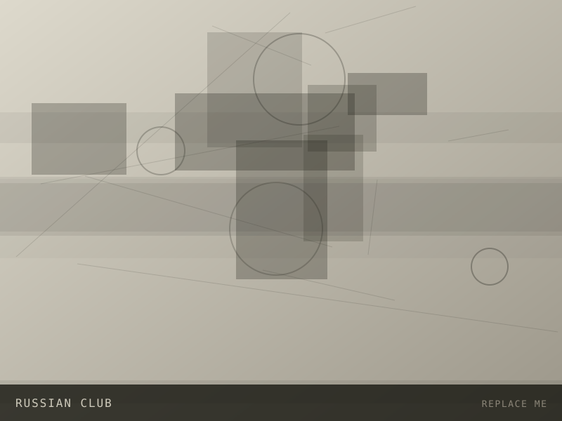
PRESIDENT
Russian Club, University of Florida
2025 — PRESENT
Leading a student organization that runs cultural events, language practice nights and community socials on campus.
READ MORE
PRESIDENT · 2025 — PRESENT
Russian Club, University of Florida
As President I set the semester calendar, manage the executive board, handle budgeting through Student Government, and keep the club running week to week.
The part I care most about is making the room welcoming to people at every level of the language — students with family ties, students who studied it for a year, and students who just showed up because a friend did.
Since taking over we have grown regular attendance, added a weekly conversation hour, and partnered with other cultural organizations for joint events.
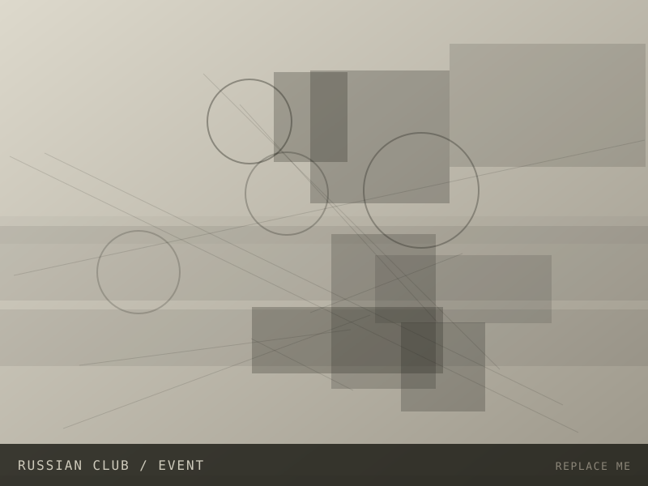
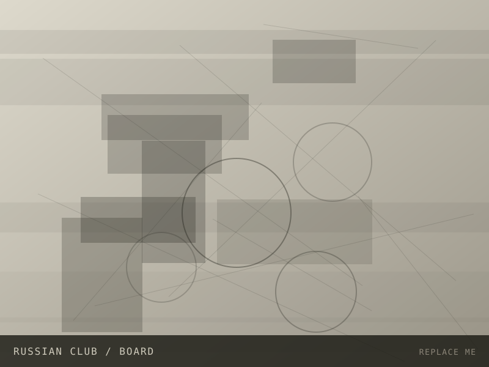
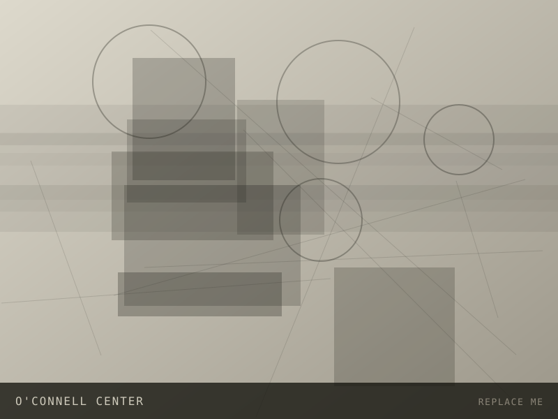
EVENT STAFF
Stephen C. O'Connell Center
2024 — PRESENT
Event operations for basketball games, gymnastics meets, concerts and commencement ceremonies.
READ MORE
EVENT STAFF · 2024 — PRESENT
Stephen C. O'Connell Center
Working events at the O'Connell Center means setup, crowd flow, guest services and teardown, often for crowds of several thousand people.
It has taught me a version of engineering that does not involve code: plans that survive contact with reality, clear handoffs between people, and staying calm when something changes ten minutes before doors open.
I have worked game days, ceremonies and touring shows, and have picked up shifts across most roles on the floor.
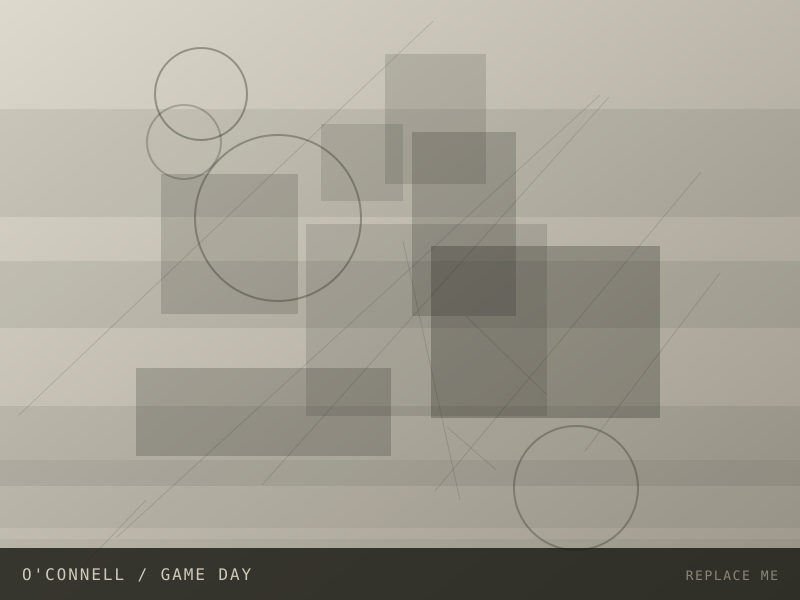
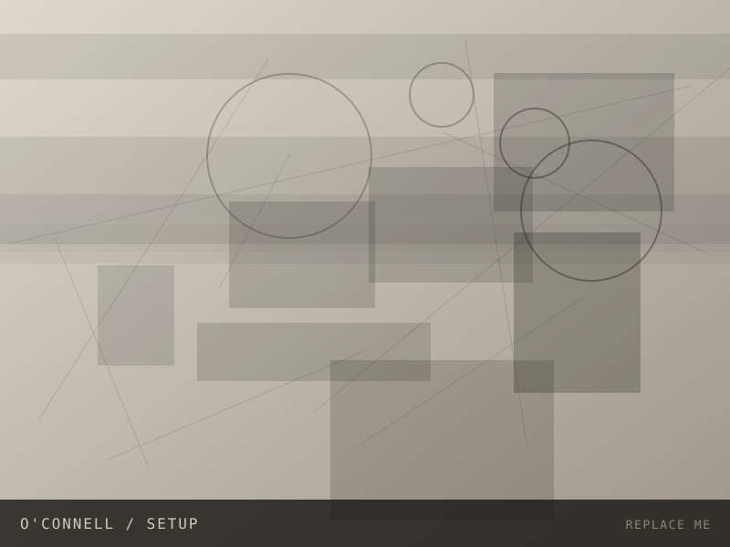
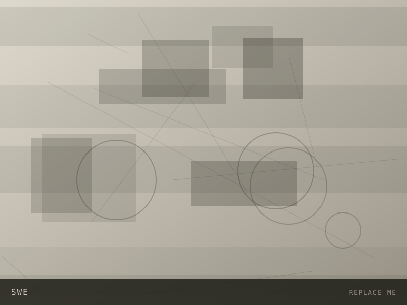
MEMBER
Society of Women Engineers
2024 — PRESENT
Professional development, outreach and mentorship within the college of engineering.
READ MORE
MEMBER · 2024 — PRESENT
Society of Women Engineers
SWE is where a lot of my professional footing came from: resume reviews, mock interviews, company nights and the network of people a year or two ahead who tell you what is actually worth your time.
I take part in outreach events that bring engineering to younger students, and in conference programming when it comes to campus.
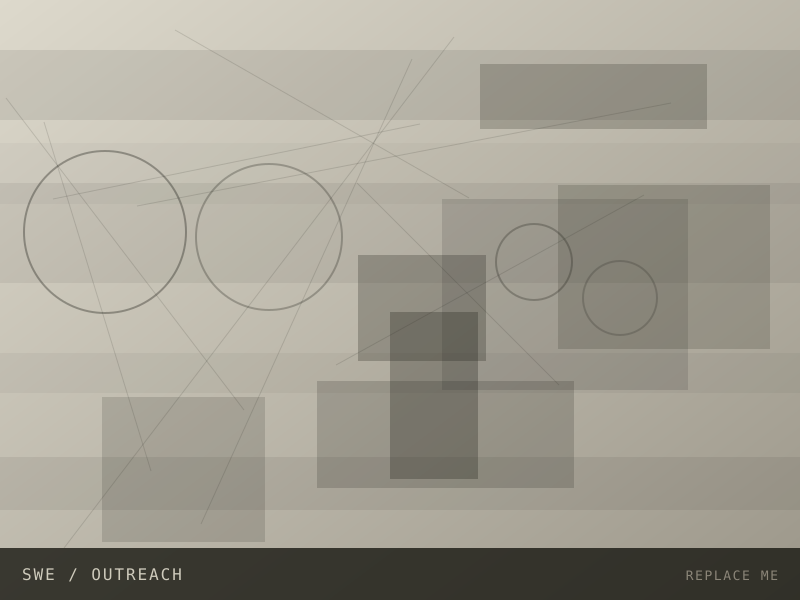
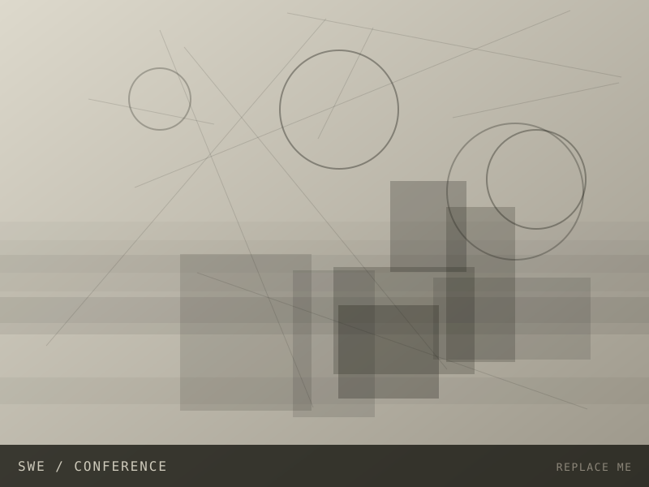
MEMBER
Audio Design & Engineering
2025 — PRESENT
Hands-on club for audio electronics — amplifier builds, signal chains and recording sessions.
READ MORE
MEMBER · 2025 — PRESENT
Audio Design & Engineering
A club built around actually making audio hardware work: amplifier and pedal builds, measurement, and the occasional argument about op-amps.
It is the most direct overlap between my coursework and something I enjoy for its own sake, and it keeps my bench skills sharp between semesters.
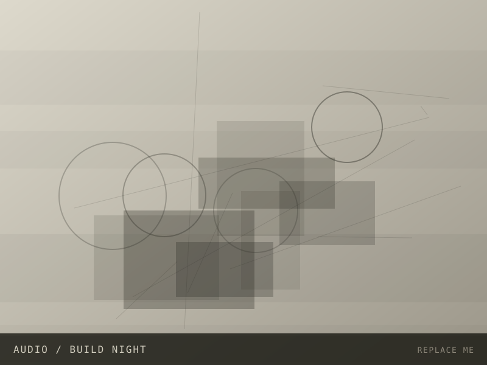
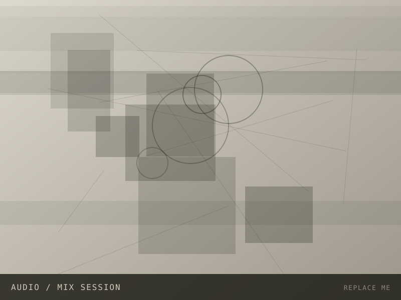
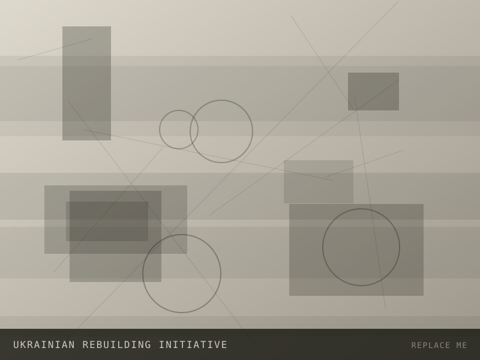
MEMBER
Ukrainian Rebuilding Initiative
2025 — PRESENT
Student organization supporting reconstruction and humanitarian efforts through fundraising and awareness work.
READ MORE
MEMBER · 2025 — PRESENT
Ukrainian Rebuilding Initiative
The initiative organizes fundraising events, awareness campaigns and partnerships with organizations doing reconstruction work on the ground.
I help with event logistics and outreach, and with keeping the effort visible on campus beyond the news cycle.
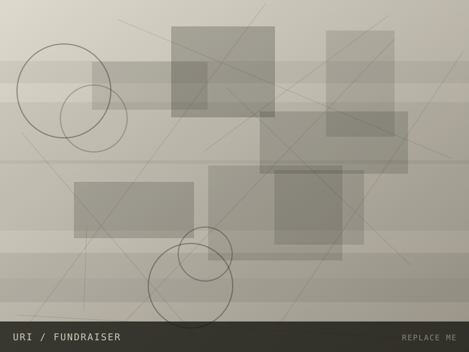
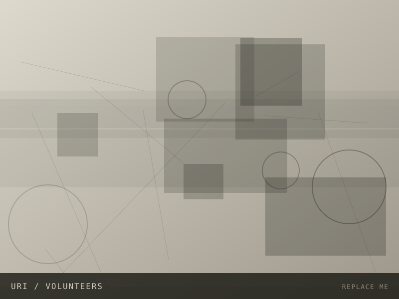
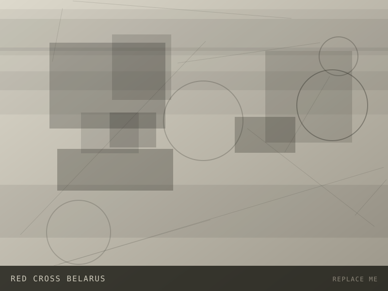
VOLUNTEER
Red Cross Belarus
2021 — 2022
Volunteer work supporting community programs, drives and first-aid awareness.
READ MORE
VOLUNTEER · 2021 — 2022
Red Cross Belarus
Volunteering with the Red Cross was my first sustained experience of organized community work: donation drives, first-aid awareness sessions and support for local programs.
Alongside it I worked with TeenJob and the Francišak Skaryna Belarusian Language Society, which shaped how I think about language, access and community.
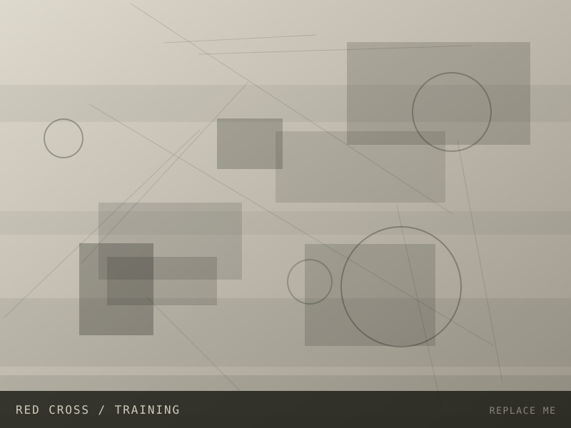
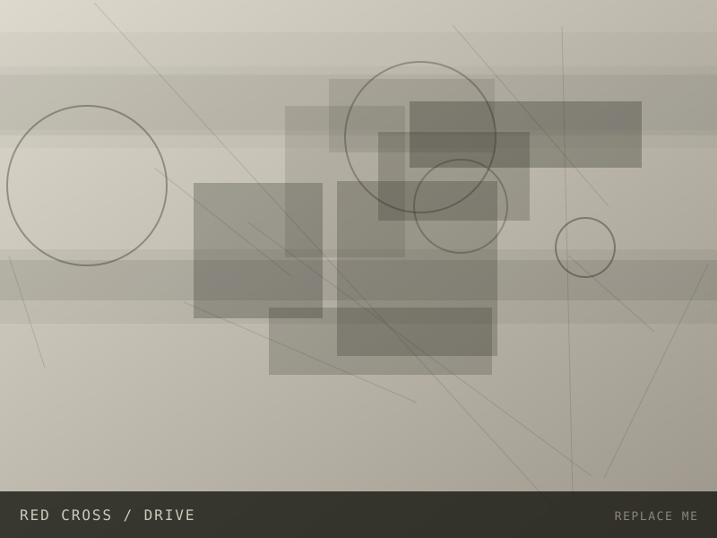
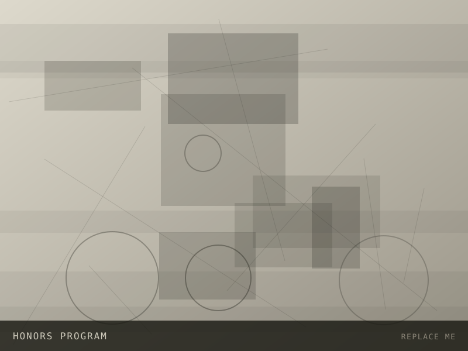
HONORS STUDENT
UF Honors Program
2024 — PRESENT
Honors coursework, seminars and undergraduate research pathways.
READ MORE
HONORS STUDENT · 2024 — PRESENT
UF Honors Program
The Honors Program is where my research direction took shape, through smaller seminars and access to faculty doing work in security and emerging technology.
It also connected me to the Florida Leadership Conference and other programming that pushed my leadership experience alongside the technical side.